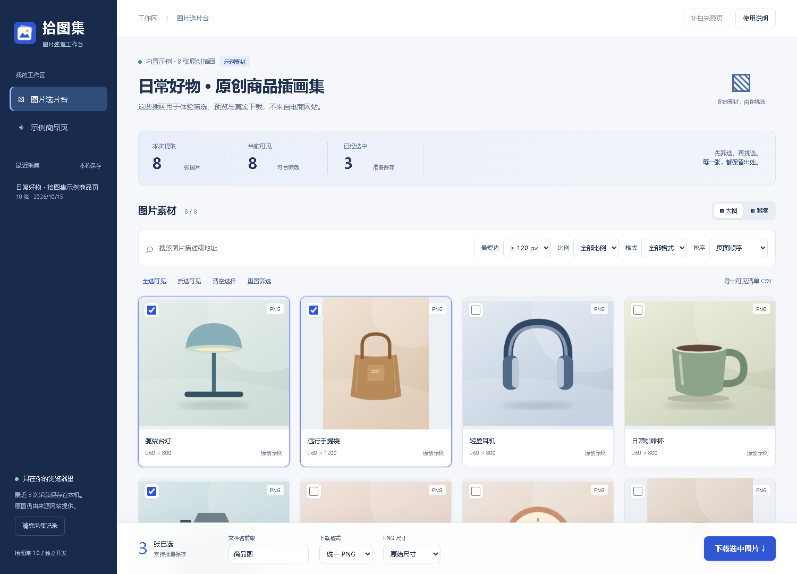

图片，集中看
发现普通图片、懒加载候选、响应式图片和 CSS 背景图；按完整地址去重。
 拾图集图片整理插件下载插件 ↓
拾图集图片整理插件下载插件 ↓

清楚地看见，轻松地挑选
用尺寸和比例缩小范围，用大图确认细节。
筛选不会清空已选图片，来源也不会丢失。

发现普通图片、懒加载候选、响应式图片和 CSS 背景图；按完整地址去重。
组合最短边、比例、格式与关键词，切换大图或紧凑布局，专注挑选。
统一 PNG 或保留原格式，自定义文件名，逐张查看下载结果，单独重试失败项。

为认真整理素材的人设计
点击工具栏的拾图集，或商品页右下角的“获取图片”。滚动加载更多后，可回到工作台补扫。
去掉小图，挑选角度，放大检查。已选数量和被筛选隐藏的勾选项始终清晰可见。
下载图片并导出 CSV 清单，记录原图地址、尺寸、来源页面和采集时间，方便回溯。
几分钟，把工作台装进浏览器
下载插件 ZIP，解压到一个固定文件夹。确保里面能找到 manifest.json。
Chrome 地址栏输入 chrome://extensions；Edge 使用 edge://extensions。
开启“开发者模式”，点击“加载已解压的扩展程序”，选择刚才的文件夹。
固定工具栏图标，打开示例商品页，点击拾图集并选择“提取当前页图片”。
打开测试商品页 ↗当前以源码插件形式提供，尚未上架扩展商店。保留解压文件夹，浏览器会从该位置加载插件。
使用之前，你可能想知道
图片在本机处理不会。插件从图片来源网站读取素材，在浏览器里转换并下载。最近 8 次采集的地址与信息保存在本机，可随时清除。
为读取并转换跨域图片，插件会申请本次所选图片的来源域名访问权限。拒绝后不会启动下载，可打开原图手动保存。
不能保证。插件处理当前已加载的页面内容，不绕过登录、验证码、防盗链或付费限制。登录后再滚动页面，可让更多懒加载图片出现；跨域 iframe、封闭 Shadow DOM 和网站内部接口内容不在扫描范围。平台改版也可能影响悬浮入口，仍可尝试工具栏入口。
默认保留解码后的尺寸，也可将最长边缩到 2048 或 1200 像素。动图转换只保留静态帧，元数据不保证保留；需要保留原文件时选择“保留原格式”。单图限制为 25 MB，PNG 转换限制为 5000 万像素。
插件不会改变原图的权利归属。请使用自有素材或已获授权的图片。示例页的插画由本项目独立绘制，可用于课程演示。
让收集少一点重复，让素材多一份条理。
* 已提供示例测试页与自动化测试；真实平台的可提取范围取决于当前页面、登录状态与防盗链策略。